SMU (Suburban Multiple Unit)¶
Walkers/Adtranz Surban Multiple Unit 200 series (SMU200)¶
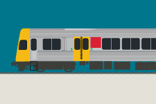
The SMU200 as seen on QR's Carriage Layouts page
Refurbishment of SMU200s: https://www.downergroup.com/downer-secures-80-million-queensland-rail-con
Carriage Layout (Design A)¶
Carriage 1¶
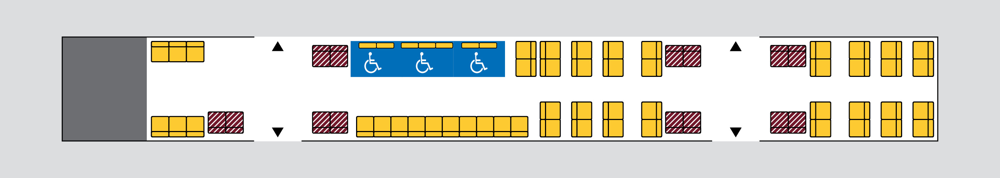
Carriage 2¶
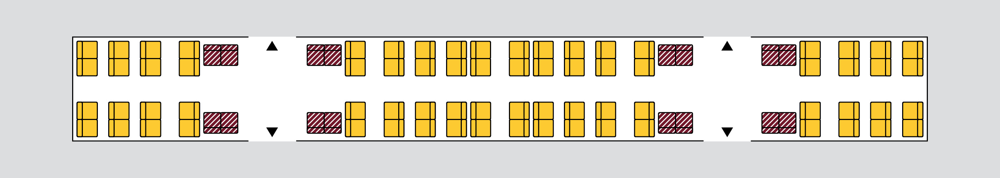
Carriage 3¶
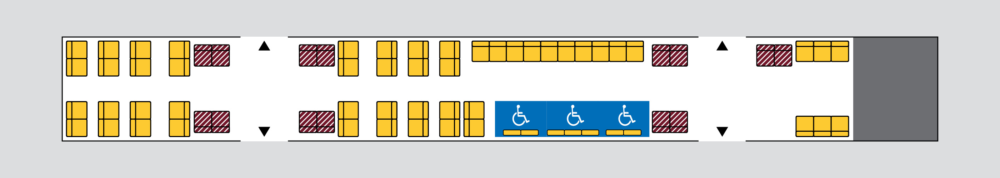
Carriage Layout (Design B)¶
May also be SMU220, but I can't tell the difference.
Source archived here - see figure A1
Carriage 1¶

Carriage 2¶

Carriage 3¶

EDI/Bombardier Suburban Multiple Unit 220 series (SMU220)¶
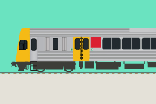
The SMU220 as seen on QR's Carriage Layouts page
To keep the auxiliary converters (and systems) online through neutral sections 220’s and 120’s automatically apply a small amount of regenerative braking when traversing neutral sections at speeds above 20km/h. This reduces the need to rely on the battery system and is why they maintain full lighting and air conditioning compared to other units in the fleet.
For some reason at speeds around 40-60km/h they can produce a rather nasty shudder through the train. As a driver there isn’t much that can be done to prevent it. Some do it, some don’t, some are worse than others. Just a quirk of the units. Source: https://www.reddit.com/r/BrisbaneTrains/comments/1hikjzi/comment/m321aky
SMU222, along with another unit, is usually used for driver training.
Source: https://www.reddit.com/r/brisbane/comments/k0hqc3/comment/gdijsfo
Carriage Layout¶
Carriage 1¶
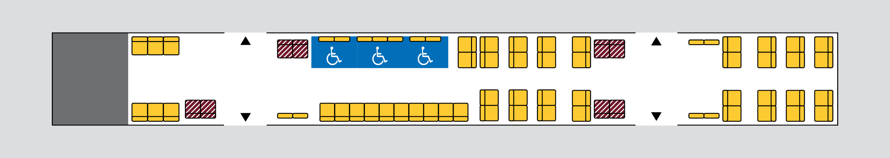
Carriage 2¶
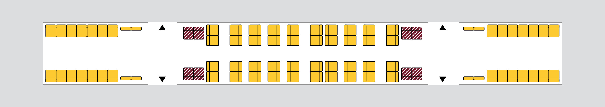
Carriage 3¶
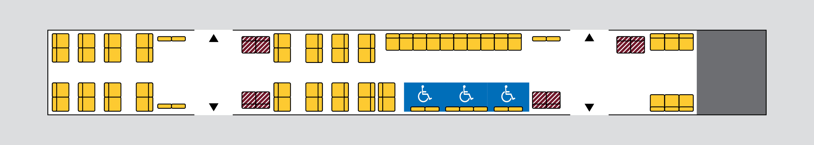
EDI/Bombardier Suburban Multiple Unit 260 series (SMU260)¶
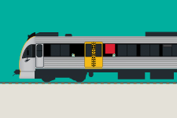
The SMU260 as seen on QR's Carriage Layouts page
Carriage Layout¶
Carriage 1¶
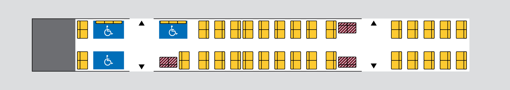
Carriage 2¶
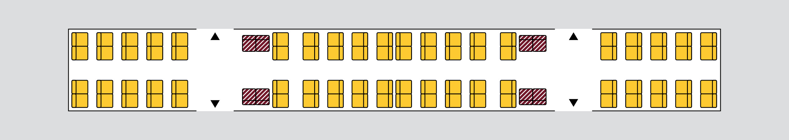
Carriage 3¶
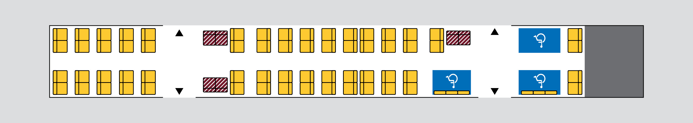
Gallery¶
There may also be other photos in the Gallery